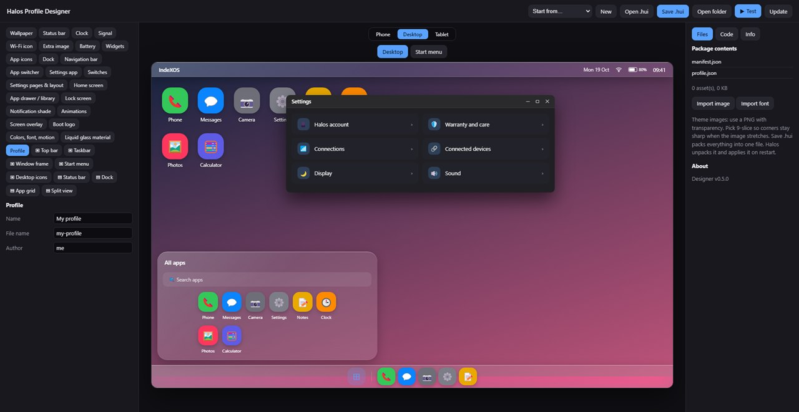

Designer for Windows
Builds .hui themes: edit the phone shell live — lock screen, home screen, app drawer, notifications, gestures, animations — switch to the desktop or tablet surface, and save the result as one theme file.
Source and status
The repository behind this site: the Designer source, its update files, and these pages. Issues and theme suggestions are welcome there.
Open on GitHubBefore you download
It is a source build, not a finished app.
There is no packaged installer yet. You unzip it, run one script once, and get a portable executable. It needs Node.js, and it will be unsigned — so Windows may warn you the first time.
| System | Windows 10 or 11, 64-bit |
|---|---|
| Requires | Node.js LTS, for the one-time build |
| Install | None — build-exe.bat produces a portable .exe |
| Signing | Unsigned pre-alpha. If SmartScreen appears: More info → Run anyway |
| Saves to | Documents\Halos Profiles |
| Build fails? | "Cannot create symbolic link" → enable Windows Developer Mode and retry |

The Designer previewing the desktop surface of a theme.
Not available
What you cannot download.
These are missing because they do not exist yet, or because they are deliberately internal — not because they are behind a sign-up.
- The OS image. There is no IndeXOS build to flash onto a phone, and there is no public image planned.
- A phone installer. No ROM, no generic installer, no support for third-party Android or iOS devices.
- The app runtimes. Windows and Android app support is planned for IndeX hardware and not built.
- The emulation stack. The test environments stay internal.
- The Workshop. The theme installer and community store is on the roadmap, not in a download.
The theme format and the Designer are shared so themes can be made and tested. The system itself is closed by design — why.
Be told when there is something to run.
A phone build is the next real milestone. One email when it boots, another when a runtime works.